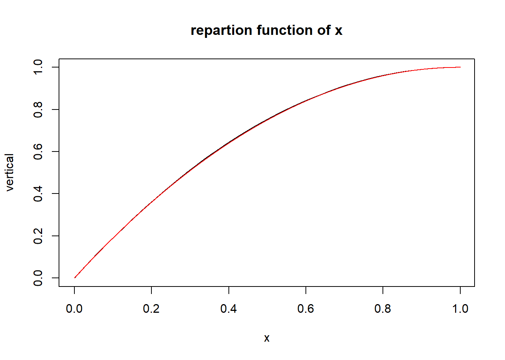
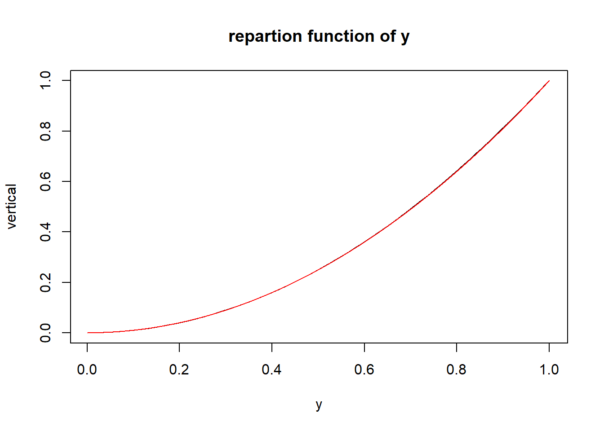
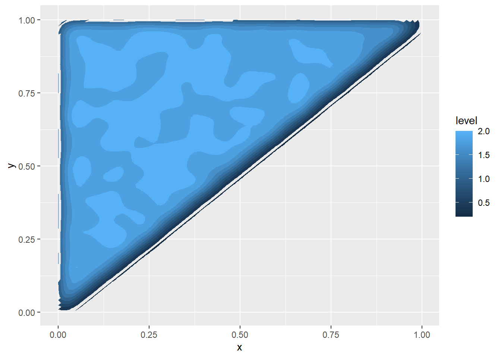

\(\huge{Part 1 : Theoretical}\)
\({M = { \{(x,y) \in \mathbb{R}^2 ; 0<x<y<1} \} }\)
So we can calculate the Area of \({M}\)
\(Area(M) = \int_{0}^{1}\int_{x}^{1}\mathbb{1}dy dx=\int_{0}^{1} \Big|y\Big|_x^1dx=\int_{0}^{1}(1-x)dx=\Big|x-\tfrac{x^2}{2}\Big|_0^1dx=1- \tfrac{1}{2}=\tfrac{1}{2}\)
We pose \(Z=(X,Y)\) and thus \(z=(x,y)\)
\(f_z(z)=\int_{0}^{1}\tfrac{1}{\tfrac{1}{2}}\mathbb{1}_{\{0\le y \le 1 \}.\{0\le x \le y \}}dz = \int_{0}^{1}2.\mathbb{1}_{\{0\le y \le 1 \}.\{0\le x \le y \}}dz = \left\{\begin{matrix}0 \:\: if \:\: z \notin M \\2 \:\: elif\end{matrix}\right.\)
Marginal densities calcule :
\(f_x(x)=\int_{x}^{1}f_z(z)dy = \left\{\begin{matrix}0 \; if \: x \notin (0,y) \\2.\int_{x}^{1}\mathbb{1}dy=2(1-x) \:\: elif\end{matrix}\right.\)
\(f_y(y)=\int_{0}^{y}f_z(z)dx = \left\{\begin{matrix}0 \; if \: y \notin (x,1) \\2.\int_{0}^{y}\mathbb{1}dy=2y \:\: elif\end{matrix}\right.\)
Independance or not ?
If \(x\) and \(y\) are independante : \(F_{xy}(x,y)=F_x(x).F_y(y)\)
We can calculate the 3 :
\(F_x(x)=\int f_x(x)dx=\int2(1-x)dx=x(2-x)\)
\(F_y(y)=\int f_y(y).dy=\int2y.dy=y^{2}\)
\(F_{xy}(x,y)=\int\int f_{xy}(x,y).dx.dy=\int\int 2.dx.dy=\int2x.dy=2xy\)
We can conclude : \(F_{xy}(x,y) \neq F_x(x).F_y(y)\)
Tha variables \(x\) and \(y\) are not independante.
\(\huge{Part \: 2 : Practical}\)
create a sample :
x<-rep(NA,100000)
y<-rep(NA,100000)
for(i in 1:100000){
t<-runif(2)
x[i]<-min(t) #because x<y
y[i]<-max(t) #because y>x
}
z<-data.frame(cbind(x,y))\(F_x(x) :\)
vertical <- seq(0,1,length.out =100000 )
plot(sort(x),vertical,type="l",xlab="x",main="repartion function of x")
lines(vertical,vertical*(2-vertical),type="l",col="red")
The two curves merge, we can conclude the accuracy of the formula. \(F_x(x)=x(2-x)\) so \(f_x(x)=2-2x\)
\(F_y(y) :\)
plot(sort(y),vertical,type="l",xlab="y",main="repartion function of y")
lines(vertical,vertical^2,type="l",col="red")
The two curves merge, we can conclude the accuracy of the formula. \(F_y(y)=y^{2}\) so \(f_(yx)=2y\)
$f_z(z) : $
library(ggplot2)
ggplot(z, aes(x=x, y=y) ) +
stat_density_2d(aes(fill = ..level..), geom = "polygon")
We can see that worth zero if \(z \notin M\) and \(=2 \:\: if \:z \in M\)